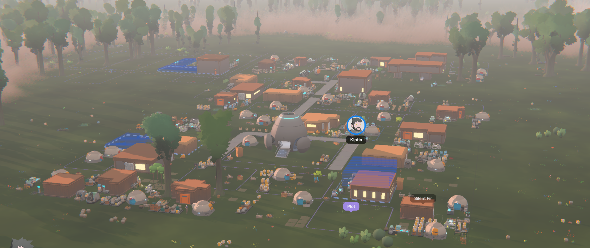

WEEK 01 · FOUNDATIONS
The first roots take hold

The empty ground had become a neighborhood.
Homes and workshops gathered around a connected street grid. Grow plots and production areas pushed toward the settlement’s edges, while the landing pod remained at the center of daily life.
This is the first preserved view of Velaris—not finished, not polished, but unmistakably alive.